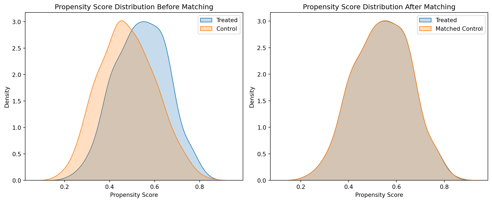

Show the code
import numpy as np
import pandas as pd
from sklearn.linear_model import LogisticRegression
from sklearn.neighbors import NearestNeighbors
import matplotlib.pyplot as plt
import seaborn as snsPropensity Score Matching (PSM) is a statistical technique used to estimate the effect of a treatment by accounting for the covariates that predict receiving the treatment. It is particularly useful in observational studies where random assignment is not possible. By matching units (e.g., individuals) with similar propensity scores, PSM helps to create a balanced comparison group, thereby reducing selection bias and allowing for a more accurate estimation of the treatment effect.
For example, a scenario where a public health department wants to evaluate the effectiveness of a new smoking cessation program. They want to determine whether participation in the program leads to a significant increase in the likelihood of quitting smoking. However, conducting a randomized controlled trial may not be feasible because people cannot be forced to participate or not participate in the program—they have the choice to opt in or out.
In this case, observational data is collected from individuals who chose to participate in the program (treatment group) and individuals who did not participate (control group). Since participation is voluntary, there could be selection bias: participants in the program may differ from non-participants in ways that affect their likelihood of quitting smoking. For example, participants may be more motivated or have more support from family and friends, while non-participants may lack motivation or have other challenges.
To properly evaluate the impact of the smoking cessation program, PSM can be used to create comparable groups by matching participants and non-participants based on observed characteristics, such as: age, gender, socioeconomic status and others specific to the studied subject (like level of nicotine dependence, prior quit attempts or support systems).
This technique allows:
Balancing Covariates. By matching participants with non-participants who have similar characteristics (e.g., age, socioeconomic status, and level of nicotine dependence), PSM helps balance the observed covariates between the groups. This helps reduce the bias that comes from self-selection into the program.
Reducing Confounding. In observational studies, confounding factors can obscure the true relationship between the intervention (participation in the program) and the outcome (quitting smoking). By creating a matched control group with similar propensity scores, PSM helps mitigate these confounding effects.
Estimating Causal Effects. After matching, researchers can compare the quit rates between the treatment and matched control groups to estimate the causal effect of the smoking cessation program. This estimate will be more reliable because the treatment and control groups are more comparable in terms of their likelihood of quitting smoking.
The propensity score is the probability of assignment to a treatment group, given a set of observed covariates. Once estimated, units from the treatment group are matched to units from the control group with similar propensity scores, which mimics a randomized experiment.
import numpy as np
import pandas as pd
from sklearn.linear_model import LogisticRegression
from sklearn.neighbors import NearestNeighbors
import matplotlib.pyplot as plt
import seaborn as snsnp.random.seed(42)
# Number of samples
n_samples = 1000
# Covariates
X1 = np.random.normal(0, 1, n_samples)
X2 = np.random.normal(0, 1, n_samples)
# Treatment assignment based on covariates
prob_treatment = 1 / (1 + np.exp(- (0.5 * X1 - 0.25 * X2)))
treatment = np.random.binomial(1, prob_treatment)
# Outcome variable
Y = 3 * treatment + 2 * X1 + X2 + np.random.normal(0, 1, n_samples)
# Create a DataFrame
data = pd.DataFrame({'X1': X1, 'X2': X2, 'Treatment': treatment, 'Outcome': Y})data['Treatment'].value_counts()
# Number of samplesTreatment
1 510
0 490
Name: count, dtype: int64# Fit Logistic Regression
log_reg = LogisticRegression()
log_reg.fit(data[['X1', 'X2']], data['Treatment'])
# Get the coefficients and feature names
coefficients = log_reg.coef_[0]
features = ['X1', 'X2']
#intercept = log_reg.intercept_[0]
# Summary of Logistic regression coeficients
summary_df = pd.DataFrame({
'Feature': features,
'Coefficient': coefficients#,
#'Odds Ratio': np.exp(coefficients)
})
# Add intercept to the summary
#intercept_df = pd.DataFrame({ 'Feature': ['Intercept'], 'Coefficient': [intercept], 'Odds Ratio': [np.exp(intercept)] })
# Concatenate the intercept and coefficients
summary_df = pd.concat([summary_df], ignore_index=True)
#summary_df = pd.concat([intercept_df, summary_df], ignore_index=True)
print(summary_df)
# Estimate propensity scores
data['Propensity_Score'] = log_reg.predict_proba(data[['X1', 'X2']])[:, 1]
data.head() Feature Coefficient
0 X1 0.447530
1 X2 -0.268716| X1 | X2 | Treatment | Outcome | Propensity_Score | |
|---|---|---|---|---|---|
| 0 | 0.496714 | 1.399355 | 0 | 2.965912 | 0.474911 |
| 1 | -0.138264 | 0.924634 | 0 | -1.137761 | 0.436090 |
| 2 | 0.647689 | 0.059630 | 1 | 3.995378 | 0.581061 |
| 3 | 1.523030 | -0.646937 | 1 | 5.700230 | 0.712742 |
| 4 | -0.234153 | 0.698223 | 1 | 3.413751 | 0.440503 |
treated = data[data['Treatment'] == 1]
control = data[data['Treatment'] == 0]
# Nearest neighbors matching based on propensity scores
nbrs = NearestNeighbors(n_neighbors=1).fit(control[['Propensity_Score']])
distances, indices = nbrs.kneighbors(treated[['Propensity_Score']])
matched_control = control.iloc[indices.flatten()]#distances.shape
#indices.shape
#nbrsmatched_data = pd.concat([treated, matched_control])
matched_data.reset_index(drop=True, inplace=True)treatment_effect = matched_data[matched_data['Treatment'] == 1]['Outcome'].mean() - \
matched_data[matched_data['Treatment'] == 0]['Outcome'].mean()
print(f"Estimated Treatment Effect: {treatment_effect:.2f}")Estimated Treatment Effect: 3.14plt.figure(figsize=(12, 5))
# Before matching
plt.subplot(1, 2, 1)
sns.kdeplot(data[data['Treatment'] == 1]['Propensity_Score'], label='Treated', shade=True)
sns.kdeplot(data[data['Treatment'] == 0]['Propensity_Score'], label='Control', shade=True)
plt.title('Propensity Score Distribution Before Matching')
plt.xlabel('Propensity Score')
plt.legend()
# After matching
plt.subplot(1, 2, 2)
sns.kdeplot(matched_data[matched_data['Treatment'] == 1]['Propensity_Score'], label='Treated', shade=True)
sns.kdeplot(matched_data[matched_data['Treatment'] == 0]['Propensity_Score'], label='Matched Control', shade=True)
plt.title('Propensity Score Distribution After Matching')
plt.xlabel('Propensity Score')
plt.legend()
plt.tight_layout()
plt.show()C:\Users\usuario\AppData\Local\Temp\ipykernel_6360\2884683950.py:5: FutureWarning:
`shade` is now deprecated in favor of `fill`; setting `fill=True`.
This will become an error in seaborn v0.14.0; please update your code.
sns.kdeplot(data[data['Treatment'] == 1]['Propensity_Score'], label='Treated', shade=True)
C:\Users\usuario\AppData\Local\Temp\ipykernel_6360\2884683950.py:6: FutureWarning:
`shade` is now deprecated in favor of `fill`; setting `fill=True`.
This will become an error in seaborn v0.14.0; please update your code.
sns.kdeplot(data[data['Treatment'] == 0]['Propensity_Score'], label='Control', shade=True)
C:\Users\usuario\AppData\Local\Temp\ipykernel_6360\2884683950.py:13: FutureWarning:
`shade` is now deprecated in favor of `fill`; setting `fill=True`.
This will become an error in seaborn v0.14.0; please update your code.
sns.kdeplot(matched_data[matched_data['Treatment'] == 1]['Propensity_Score'], label='Treated', shade=True)
C:\Users\usuario\AppData\Local\Temp\ipykernel_6360\2884683950.py:14: FutureWarning:
`shade` is now deprecated in favor of `fill`; setting `fill=True`.
This will become an error in seaborn v0.14.0; please update your code.
sns.kdeplot(matched_data[matched_data['Treatment'] == 0]['Propensity_Score'], label='Matched Control', shade=True)